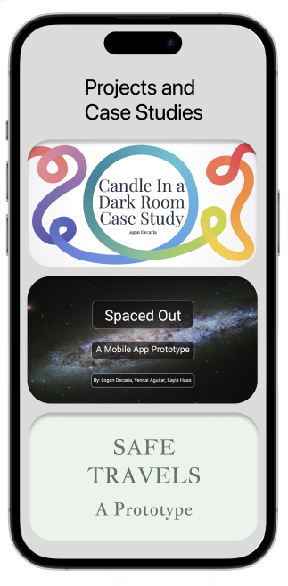

Hi there, i'm Logan! I am a UX/UI Researcher
and designer with a knack for prototyping and
styling.
My UX/UI journey actually began long before I even realized it. In 2020, I took the initiative to dive into design by enrolling in various graphic design and marketing courses. As time went on, my passion for creating user-centered experiences grew, leading me to pursue an official UX/UI education with University of Utah. What truly captivates me within this field is the art of coding and prototyping, as it allows me to bring my designs to life and show my ideas to the world.
